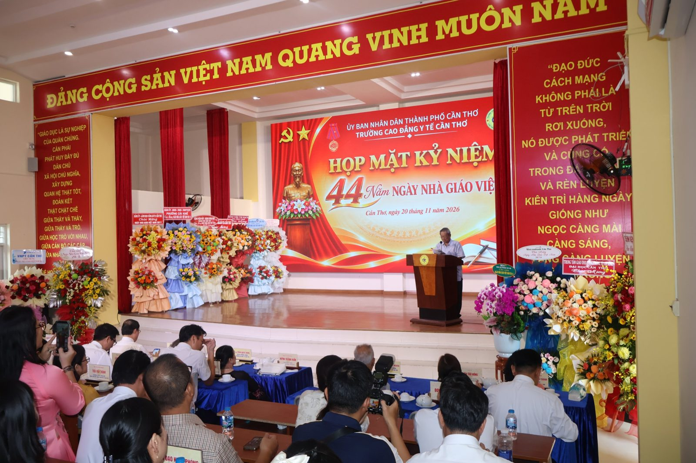
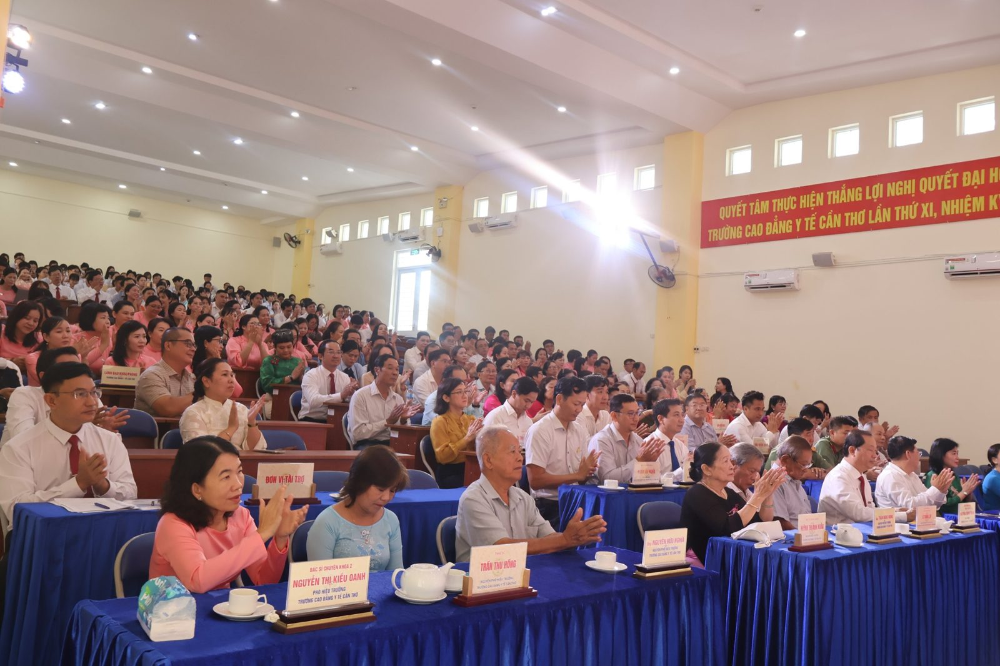
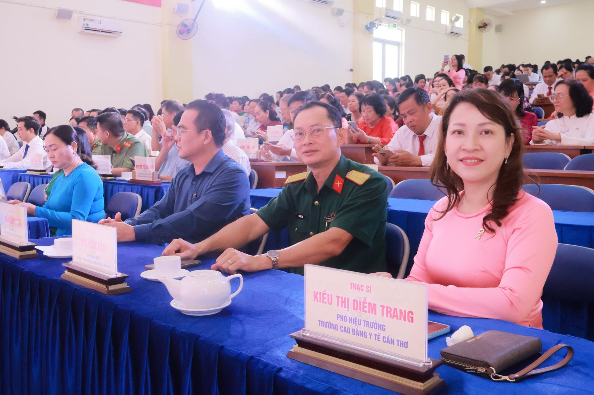
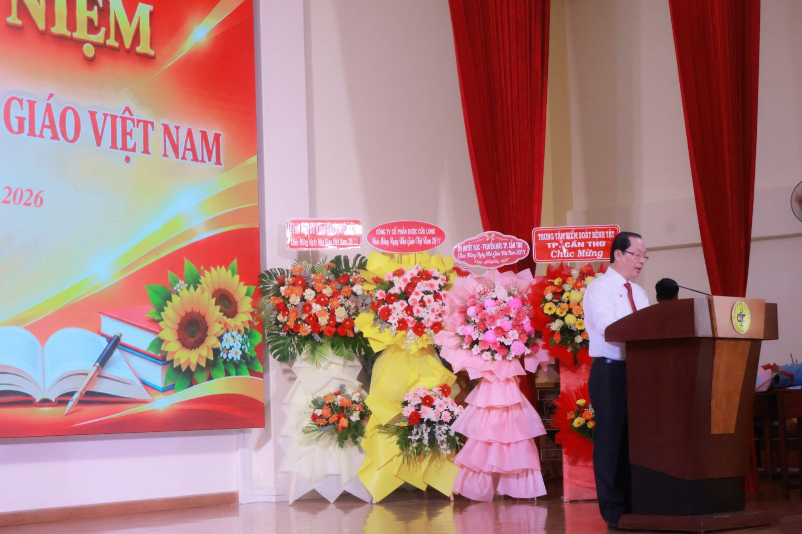
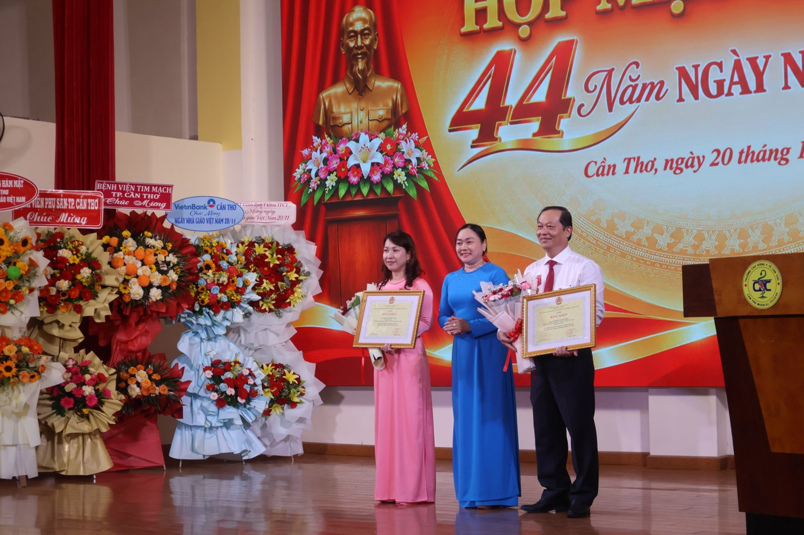
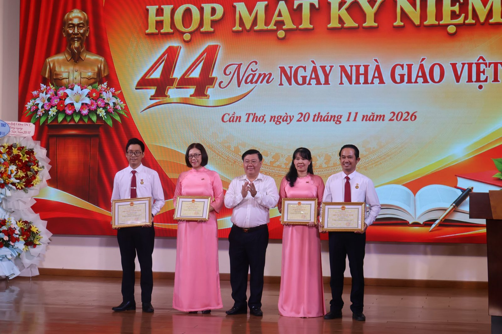
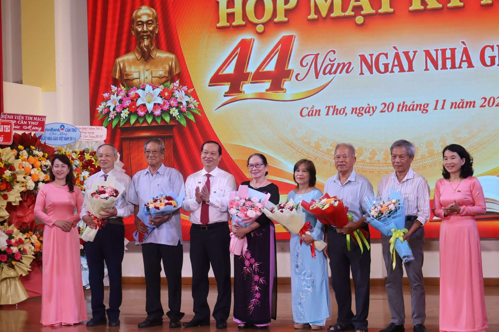
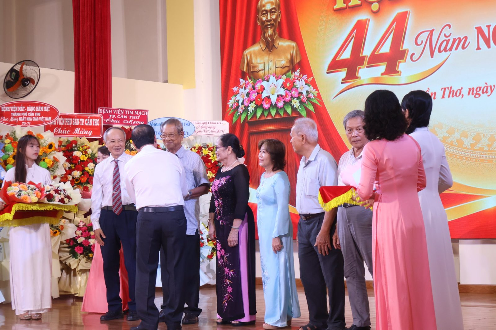
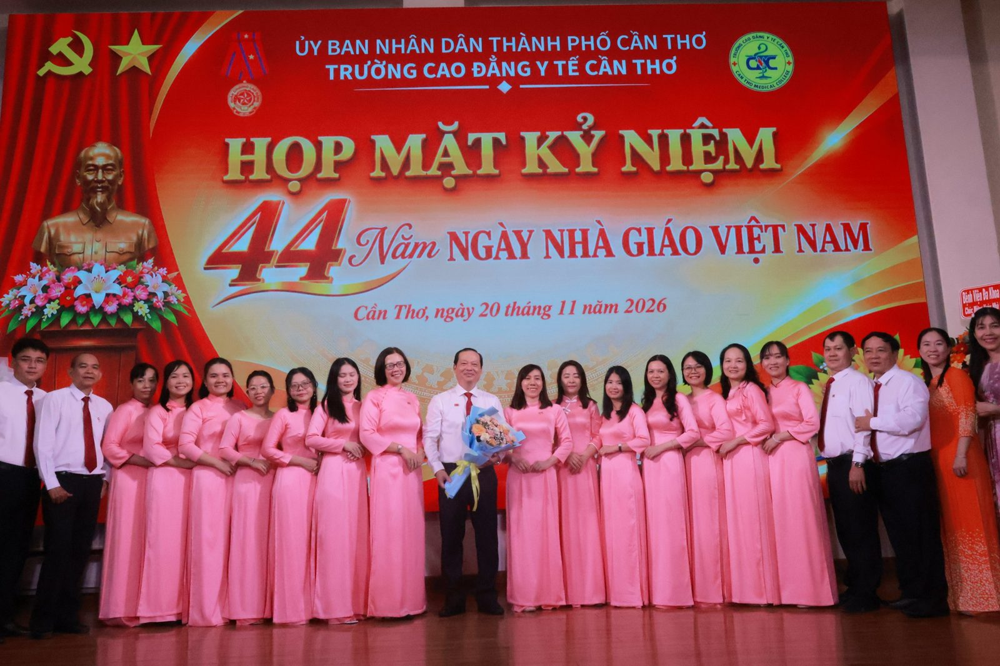
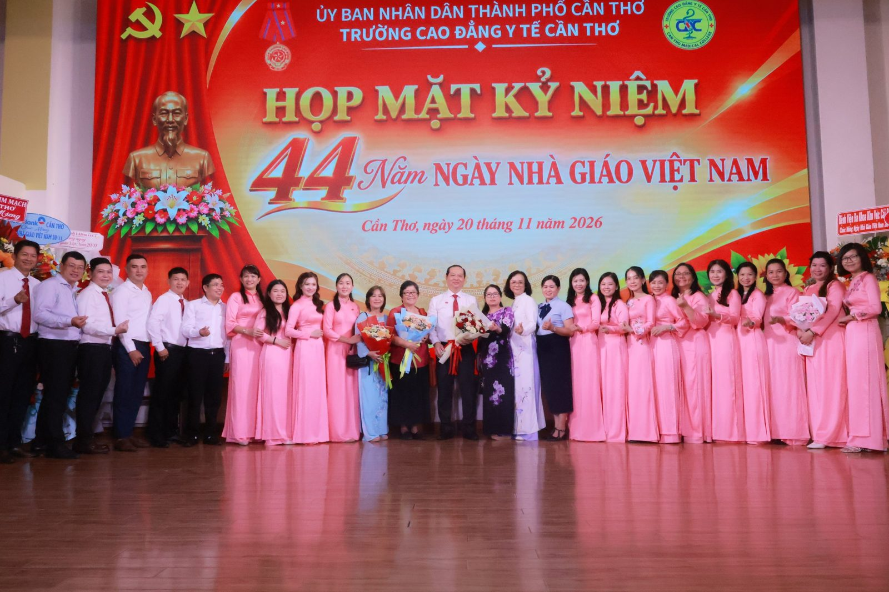

Sáng ngày 20/11/2026, trong không khí trang trọng và ấm áp, Trường Cao đẳng Y tế Cần Thơ tổ chức buổi Họp mặt kỷ niệm 44 năm Ngày Nhà giáo Việt Nam (20/11/1982 - 20/11/2026). Đây là dịp để Nhà trường tôn vinh đội ngũ nhà giáo, tri ân các thế hệ thầy cô đã gắn bó với sự nghiệp đào tạo nhân lực y tế, đồng thời ghi nhận những thành tích nổi bật của các tập thể và cá nhân. Điểm nhấn của buổi lễ là việc Thầy thuốc Ưu tú, TS.BS Nguyễn Quang Thông, Hiệu trưởng Nhà trường, vinh dự đón nhận Huân chương Lao động hạng Ba của Chủ tịch nước.

Đông đảo đại biểu, thầy cô và sinh viên tham dự
Đến dự buổi họp mặt có các đồng chí lãnh đạo, đại biểu khách mời, lãnh đạo Nhà trường qua các thời kỳ, các thầy cô giáo đã nghỉ hưu cùng đông đảo cán bộ, giảng viên, nhân viên và sinh viên của Trường. Hội trường được trang hoàng rực rỡ với nhiều lẵng hoa chúc mừng của các bệnh viện, cơ sở y tế và đơn vị đối tác trên địa bàn thành phố.


Đào tạo người thầy thuốc vừa giỏi chuyên môn, vừa giàu y đức
Phát biểu tại buổi họp mặt, TS.BS Nguyễn Quang Thông bày tỏ sự trân trọng đối với những đóng góp của đội ngũ nhà giáo trong suốt chặng đường xây dựng và phát triển của Nhà trường. Hiệu trưởng nhấn mạnh nhiệm vụ trọng tâm là đào tạo đội ngũ nhân lực y tế có kiến thức vững vàng, kỹ năng thành thạo, giàu y đức và lòng nhân ái.
Trước sự phát triển mạnh mẽ của trí tuệ nhân tạo và chuyển đổi số, Hiệu trưởng kêu gọi mỗi thầy cô tiếp tục chủ động đổi mới phương pháp giảng dạy, không ngừng học hỏi để đáp ứng yêu cầu ngày càng cao của xã hội đối với công tác đào tạo nhân lực ngành y.

Vinh dự đón nhận Huân chương Lao động hạng Ba
Với những thành tích xuất sắc trong công tác, góp phần vào sự nghiệp xây dựng chủ nghĩa xã hội và bảo vệ Tổ quốc, Thầy thuốc Ưu tú, TS.BS Nguyễn Quang Thông vinh dự được Chủ tịch nước tặng thưởng Huân chương Lao động hạng Ba. Đây là phần thưởng cao quý, ghi nhận những đóng góp bền bỉ của Hiệu trưởng trong công tác quản lý, đào tạo và chăm sóc sức khỏe nhân dân, đồng thời là niềm tự hào chung của tập thể cán bộ, giảng viên, nhân viên Nhà trường.
Bên cạnh đó, năm 2026, TS.BS Nguyễn Quang Thông còn được Tổng Liên đoàn Lao động Việt Nam tặng Bằng khen vì có thành tích xuất sắc trong phong trào thi đua lao động sản xuất và xây dựng tổ chức công đoàn vững mạnh năm 2025 - 2026. ThS. Kiều Thị Diễm Trang, Phó Hiệu trưởng, Chủ tịch Công đoàn Trường, cũng được tặng Bằng khen trong phong trào thi đua "Giỏi việc nước - Đảm việc nhà".

Khoa Dược - Xét nghiệm đạt danh hiệu Tập thể Lao động xuất sắc
Tại buổi họp mặt, nhiều tập thể và cá nhân của Nhà trường được khen thưởng. Theo Quyết định số 4842/QĐ-UBND ngày 18/9/2026, Khoa Dược - Xét nghiệm cùng Phòng Tổ chức cán bộ được công nhận danh hiệu Tập thể Lao động xuất sắc. Đây là sự ghi nhận xứng đáng cho tinh thần đoàn kết, nỗ lực không ngừng của toàn thể giảng viên, viên chức của Khoa trong công tác giảng dạy, nghiên cứu khoa học và phục vụ người học.

Cũng trong dịp này, các giảng viên Quách Khánh Thành và Huỳnh Thanh Phong được công nhận danh hiệu Chiến sĩ thi đua thành phố Cần Thơ giai đoạn 2022 - 2023 đến 2024 - 2025. Theo Quyết định số 1152/QĐ-TTg ngày 26/6/2026, giảng viên Lê Nguyễn Châu Hà (Khoa Y) được Thủ tướng Chính phủ tặng Bằng khen, là một trong 22 cá nhân của thành phố được khen thưởng vì thành tích trong công tác giáo dục và đào tạo từ năm học 2020 - 2021 đến 2024 - 2025. Ngoài ra, theo Quyết định số 5173/QĐ-UBND ngày 08/10/2026, 13 cán bộ của Nhà trường được Chủ tịch UBND thành phố tặng Bằng khen vì thành tích trong các năm học 2024 - 2025 và 2025 - 2026.
Tri ân các thế hệ nhà giáo
Trong không khí xúc động, lãnh đạo Nhà trường đã tặng hoa tri ân các thầy cô nguyên là lãnh đạo, nhà giáo đã nghỉ hưu - những người đã đặt nền móng và đồng hành cùng Nhà trường qua nhiều thế hệ. Những bó hoa tươi thắm là lời cảm ơn chân thành đối với những năm tháng tận tụy với sự nghiệp đào tạo nhân lực y tế.


Khoa Dược - Xét nghiệm chung niềm vui ngày hội nhà giáo
Tập thể giảng viên Khoa Dược - Xét nghiệm trong tà áo dài hồng đã cùng tham dự buổi họp mặt, chung vui với niềm tự hào của Nhà trường. Thành tích Tập thể Lao động xuất sắc là nguồn động viên to lớn để Khoa tiếp tục nâng cao chất lượng đào tạo, xứng đáng với sự tin tưởng của Nhà trường, người học và xã hội.


Nội dung tham khảo: Trần Tú, "Thầy thuốc Ưu tú, TS.BS Nguyễn Quang Thông vinh dự đón nhận Huân chương Lao động hạng Ba của Chủ tịch nước", Tạp chí điện tử Việt - Đức, 20/11/2026. Đọc bài gốc →
Hình ảnh: Khoa Dược - Xét nghiệm.